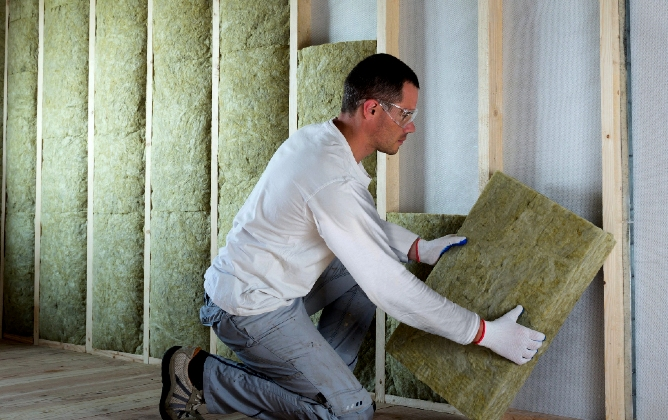
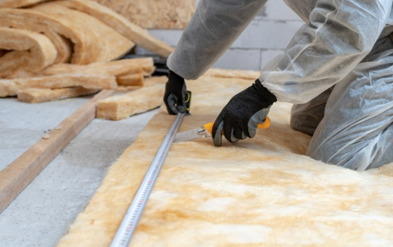

Things You Can Do with Insulation
Chances are you may have seen insulation in your home at some point, either on the walls or on ceilings. As an insulator, it does its job well, but the process of making it is not that straightforward. The insulation is made of various materials including fibers, paper, and plastic. Each of these materials is used in different ways to achieve specific goals, and each material has different properties. To make this clearer, let's take a look at the ways insulation is applied in different types of homes.
New exterior walls
While many people are aware that insulation can improve the efficiency of their homes, they don't realize it can also improve the look of their walls. Well, not their walls, per say, but their exterior walls. And by "exterior", we mean the exterior walls of the house, including the basement, first floor, second floor, and attic. And by "improve", we mean insulate the walls so they are warmer inside than outside.
Air leakage points
As the temperature rises:
- Glass
- Metal
- Plastic

...all susceptible to heat loss. While you can always turn up the heat, it's not the most efficient method of heat control. By utilizing air leakage points in your home, you can effectively trap heat inside your home, reducing the amount of heat lost through your walls, floors, and ceilings.
Stop draft and mice
Drafts and mice can both be pesky pests, but what can you do about them? Insulation is a great way to stop drafts from making it into your home as well as keep mice out. Insulation is a term that refers to any material used to prevent cold from entering buildings, rooms, and homes. It includes interior and exterior building materials used for thermal insulation, noise isolation, and acoustical insulation.
Renovated basements
Most people consider their home an investment, which makes your house a great place to spend money. But, if your house is not well insulated, you are really losing money. There are several ways to spend less energy by insulating your attic, walls, and doors.

Fire protection
As we all know, insulation is a simple, yet essential performing material that helps keep our homes warm and safe. It keeps heat from escaping and helps keep us safe from electrical fire. Many people don't comprehend the magnitude of keeping insulation in place, and how it can help protect lives and property. Plus, it’s used in all sorts of construction and building applications, and its uses extend far beyond home and building construction.
Sound proofing
Insulation is the backbone of any sound proofing project. Unfortunately, insulation is not always easily categorized. It can be classified as vapor retarder, vapor barrier, or soundproofing material. It is the function of the insulation that determines the outcome of a sound proofing project and if you are living in an apartment or have neighbors who have parties, there are even sounds you can't hear at all.
Conclusion
The best thing about insulation is that you can always get creative. If you take a look around your home, there's a good chance you'll find a lot of spaces that could use a little insulation. The places you find it may surprise you. You might even find a creative use for it that we haven't mentioned here.